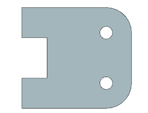
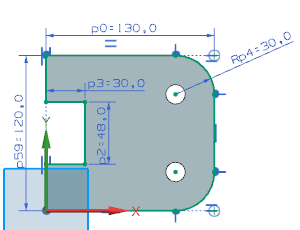
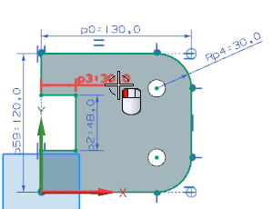
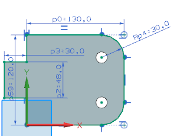

第一个设计变更是要您更改部件，以将凹坑变为凸起。
打开 skt01_alt_sol。

在部件导航器中，右击草图 (1)“SKETCH_000”并选择编辑。
NX 将在建模中直接打开草图，这将让您可以实时看见草图变化如何影响模型。

在直接草图工具条上，确保已关闭编辑草图时延迟更新 。
在直接草图工具条上的约束下拉菜单中，点击备选解 。
在图形窗口中，选择尺寸 p3。

NX 将确定一个备选解并更新模型。
